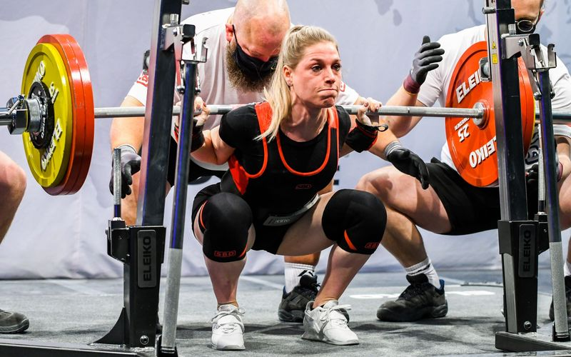

Pronađi svoj program treninga
Istraži širok izbor programa prilagođenih tvojim ciljevima.
Istaknuti programi
Pogledajte neke od najpopularnijih programa koje nudimo.


Zašto mi?
Ovdje će biti navedene ključne pogodnosti platforme.